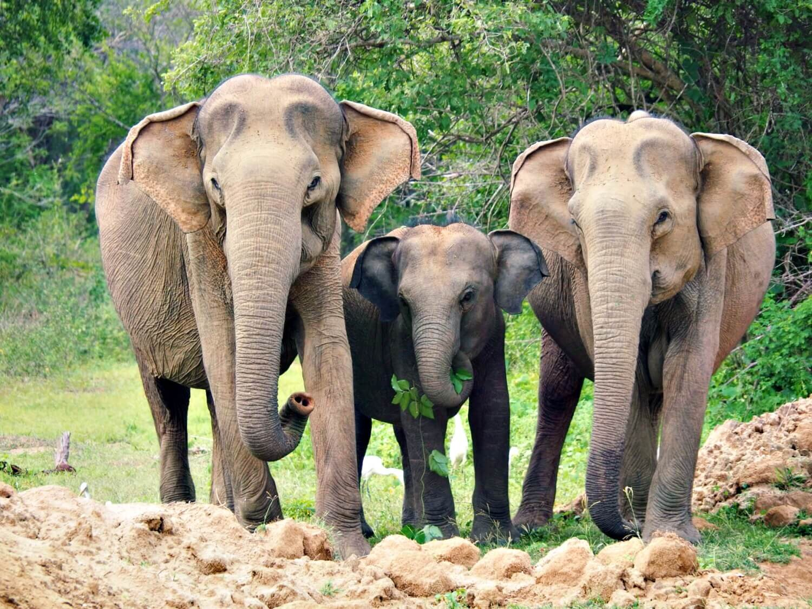
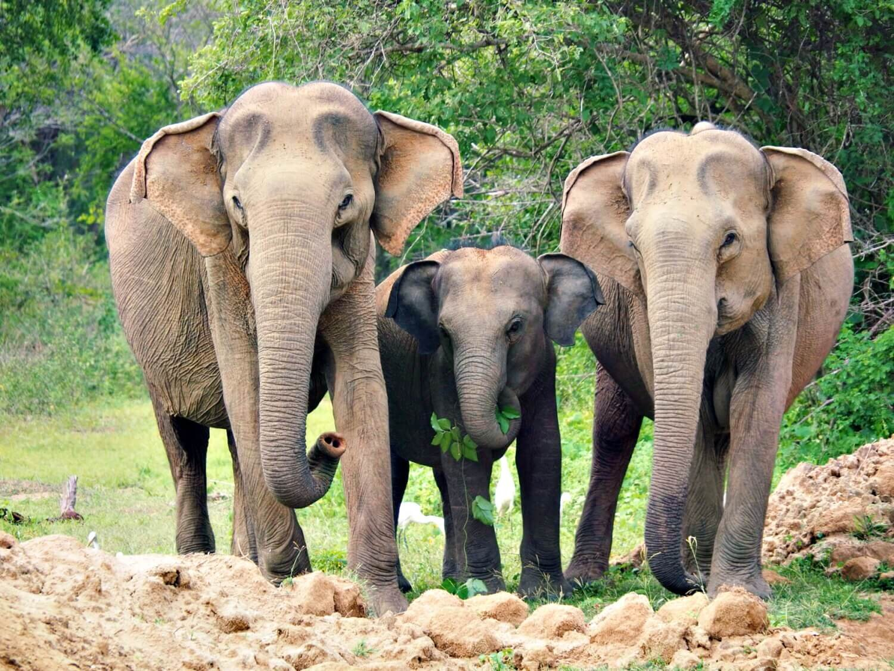

Images Of Yala National Park

Yala National Park, located in the southeastern corner of Sri Lanka, is a mesmerizing sanctuary that encapsulates the essence of nature's beauty. Spanning over 978 square kilometers, it is renowned for its diverse ecosystems, including lush jungles, serene lakes, and expansive grasslands. The park is a haven for wildlife enthusiasts, boasting a rich biodiversity that includes elephants, leopards, sloth bears, and a myriad of bird species. Its scenic landscapes, from rocky outcrops to pristine beaches, create a picturesque backdrop for the thriving flora and fauna. Yala provides a unique opportunity to witness the harmonious coexistence of various species in their natural habitat, making it a captivating destination for those seeking an immersive encounter with the wonders of the wild.
Yala National Park, situated in Sri Lanka, is a renowned haven for wildlife enthusiasts, and its diverse ecosystems harbor a significant population of Asian elephants. Amidst the park's dry woodlands and lush grasslands, these majestic creatures roam freely, creating a captivating spectacle for visitors on safari. Yala's elephants, part of one of the highest densities of the species in Asia, showcase natural behaviors such as bathing in waterholes or foraging for food. The park's unique blend of biodiversity and scenic landscapes enhances the allure of encountering these gentle giants, making Yala a must-visit destination for those seeking a memorable wildlife experience.

YALA ANIMAL GALLERY
 
